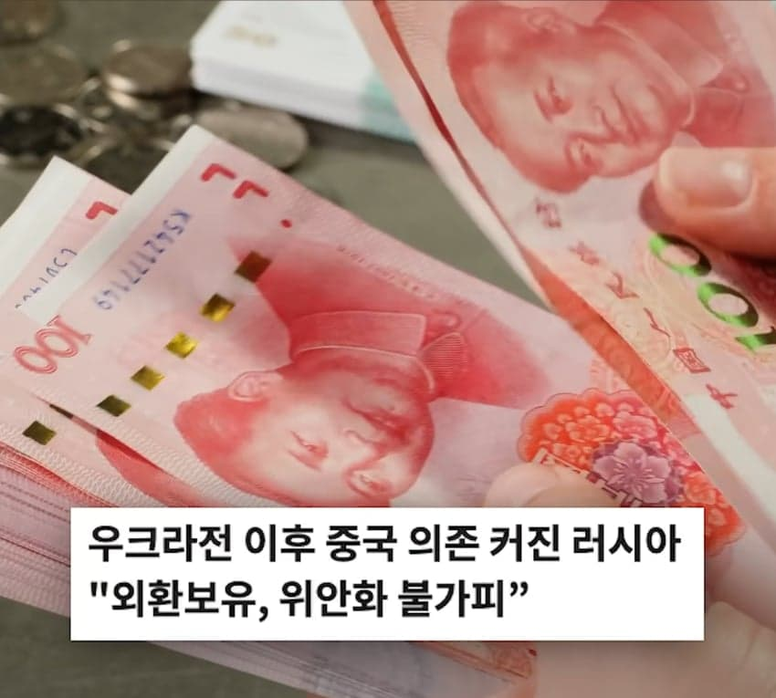
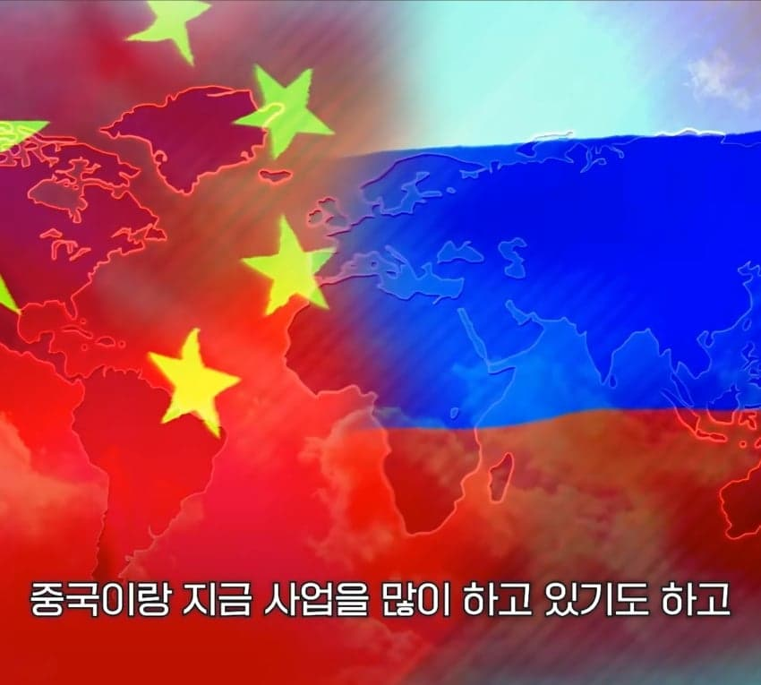
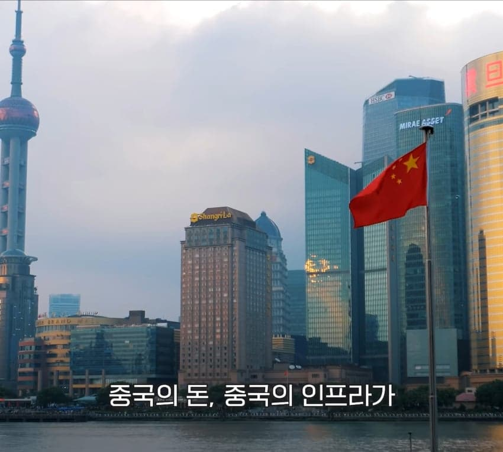
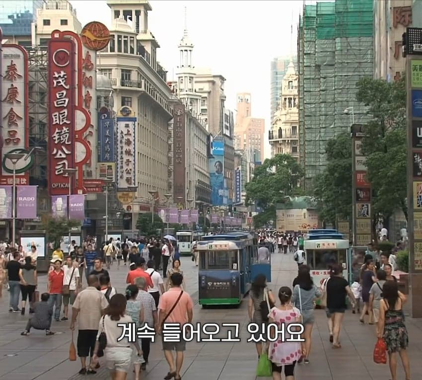
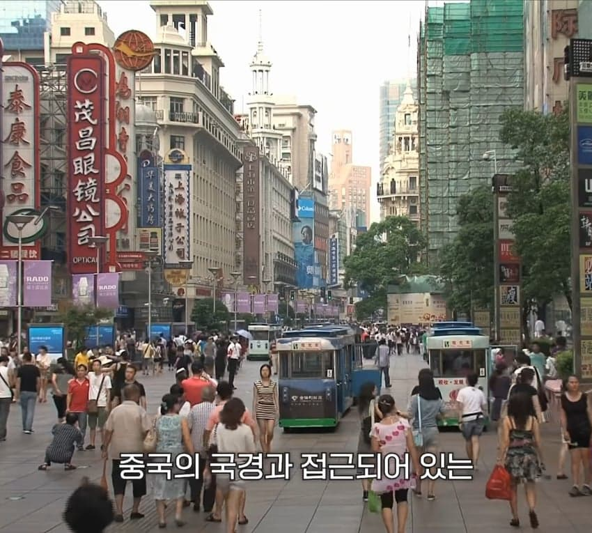
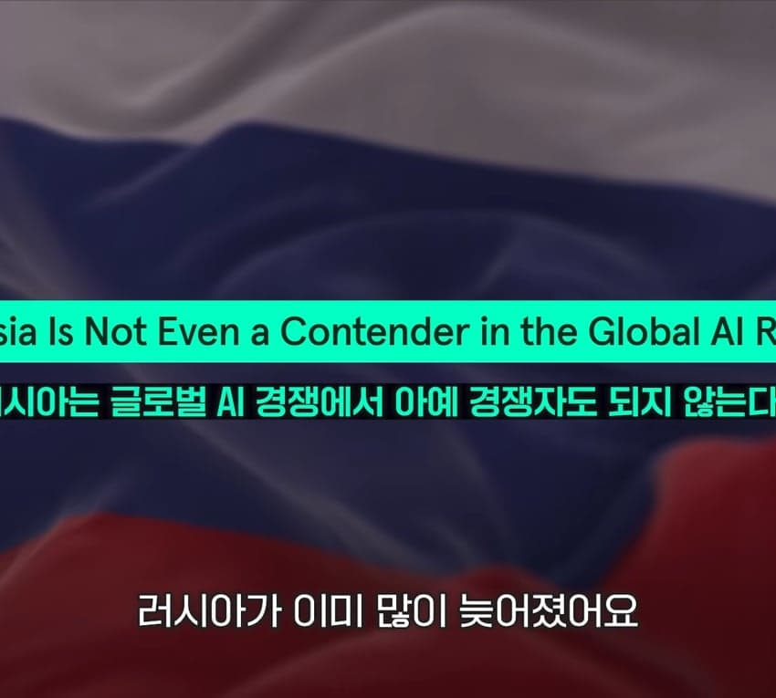
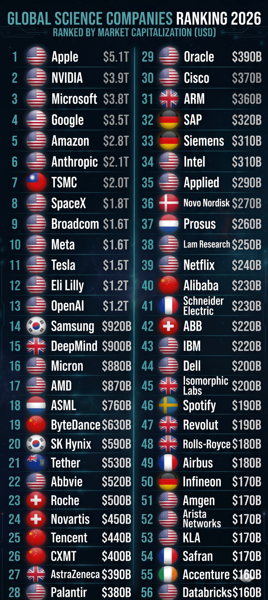

자체적인 자국 산업과 대기업을 육성하지않은 러시아는 이제 금융, 기술, 문화, 관광업까지 중국에 장악당했다고....

서방세계가 국경을 초월하는 초거대 기술 회사들을 찍어낼동안 러시아는 어떤 기술을 키웠는가?
서방세계가 전세계 대중문화 시장을 장악할동안 러시아는 무엇을 했는가?

- dc official App
댓글
수집 당시 댓글 309개
· ㅇㅇ · 11.28 09:07:40
· ㅇㅇ · 11.28 09:08:26
· ㅇㅇ · 11.28 09:09:54
· ㅇㅇ · 11.28 09:10:05
· ㅇㅇ · 11.28 09:10:28
· ㅇㅇ · 11.28 09:13:16
· ㅇㅇ · 11.28 09:25:46
· ㅇㅇ · 11.28 14:01:59
ㅇㅇ · 11.28 09:08:42
히이잉 · 11.28 09:11:13
ㅋ · 11.28 09:14:49
· ㅇㅇ · 11.28 09:25:56
ㅇㅇ · 11.28 09:20:29
ㅇㅇ · 11.28 09:21:20
ㅇㅇ · 11.28 09:23:41
· ㅇㅇ · 11.28 10:04:18
ㅇㅇ · 11.28 09:29:09
QLD사라 · 11.28 09:32:53
공정성장 · 11.28 09:33:59
ㅇㅇ · 11.28 09:34:27
ㅇㅇ · 11.28 09:37:10
ㅇㅇ · 11.28 09:38:45
· ㅇㅇ · 11.28 09:46:42
ㅇㅇ · 11.28 09:44:21
ㅇㅇ · 11.28 09:45:04
ㅇㅇ · 11.28 09:45:49
ㅇㅇ · 11.28 09:47:21
· ㅇㅇ · 11.28 13:30:50
ㅇㅇ · 11.28 09:49:22
ㅇㅇ · 11.28 09:53:44
ㅇㅇ · 11.28 09:54:24
· ㅇㅇ · 11.28 09:54:41
· ㅇㅇ · 11.28 09:55:59
· ㅇㅇ · 11.28 09:57:22
· ㅇㅇ · 11.28 09:59:54
· ㅇㅇ · 11.28 14:10:49
ㅇㅇ · 11.28 10:00:07
· ㅇㅇ · 11.28 10:01:37
ㅇㅇ · 11.28 10:04:07
ks910204 · 11.28 10:07:35
ㅇㅇ · 11.28 10:10:13
도토리2개 · 11.28 10:21:12
ㅇㅇ · 11.28 10:44:16
ㅇㅇ · 11.28 10:47:46
· ㅇㅇ · 11.28 13:28:53
ㅇㅇ · 11.28 10:53:16
ㅇㅇ · 11.28 11:02:51
· ㅇㅇ · 11.28 14:05:59
ㅇㅇ · 11.28 11:03:49
ㅇㅇ · 11.28 11:08:27
ㅇㅇ · 11.28 11:16:49
ㅇㅇ · 11.28 11:21:52
ㅇㅇ · 11.28 12:12:11
만갤러 · 11.28 12:24:56
ㅇㅇ · 11.28 12:40:18
ㅇㅇ · 11.28 12:40:23
ㅇㅇ · 11.28 12:48:11
· ㅇㅇ · 11.28 13:26:03
· ㅇㅇ · 11.28 13:42:06
ㅇㅇ · 11.28 13:19:31
· ㅇㅇ · 11.28 13:26:56
· ㅇㅇ · 11.28 15:45:45
ㅇㅇ · 11.28 13:28:15
ㅇㅇ · 11.28 13:36:38
· ㅇㅇ · 11.28 13:36:47
좌빨
빙신
ㅇㅇ · 11.28 13:38:42
방구석프로이트 · 11.28 13:38:59
ㅇㅇ · 11.28 13:39:20
ㅇㅇ · 11.28 13:39:28
· ㅇㅇ · 11.28 13:42:42
ㅇㅇ · 11.28 13:51:46
ㅇㅇ · 11.28 14:08:11
Doll · 11.28 14:18:16
ㅇㅇ · 11.28 14:28:56
퓌이이터 · 11.28 14:53:46
EE · 11.28 15:46:26
ㅇㅇ · 11.28 15:53:42
ㅇㅇ · 11.28 16:15:52
ㅇㅇ · 11.28 16:25:41
ㅇㅇ · 11.28 16:51:39
· ㅇㅇ · 11.28 17:56:19
ㅇㅇ · 11.28 16:58:27
o o · 11.28 17:03:08
ㅇㅇ · 11.28 17:07:42
ㅇㅇ · 11.28 17:23:17
· ㅇㅇ · 11.28 17:57:53
ㅇㅇ · 11.28 17:39:41
ㅇㅇ · 11.28 17:39:47
ㅇㅇ · 11.28 17:52:33
· 책을봐라 · 11.28 17:54:56
ㅇㅇ · 11.28 18:00:34
ㅇㅇ · 11.28 18:19:10
ㅇㅇ · 11.28 18:21:49
도갤러1 · 11.28 18:35:20
ㅇㅇ · 11.28 18:40:10
ㅇㅇ · 11.28 18:53:50
ㅇㅇ · 11.28 19:09:17
ㅇㅇ · 11.28 19:34:29
ㅇㅇ · 11.28 20:13:54
ㅇㅇ · 11.28 20:19:42
· ㅇㅇ · 11.28 08:58:00
· ㅇㅇ · 11.28 08:58:17
· ㅇㅇ · 11.28 08:59:32
· ㅇㅇ · 11.28 08:59:49
· ㅇㅇ · 11.28 09:00:24
· ㅇㅇ · 11.28 09:00:37
· ㅇㅇ · 11.28 09:01:04
· ㅇㅇ · 11.28 09:02:11
· ㅇㅇ · 11.28 09:07:04
· ㅇㅇ · 11.28 09:07:32
· ㅇㅇ · 11.28 14:07:58
ㅇㅇ · 11.28 08:22:09
ㅇㅇ · 11.28 08:23:45
ㅇㅇ · 11.28 08:24:17
· ㅇㅇ · 11.28 08:24:55
ㅇㅇ · 11.28 08:29:23
· ㅇㅇ · 11.28 10:02:37
ㅇㅇ · 11.28 08:29:26
· ㅇㅇ · 11.28 08:38:44
· ㅇㅇ · 11.28 08:44:07
· ㅇㅇ · 11.28 14:08:18
· ㅇㅇ · 11.28 14:10:00
ㅇㅇ · 11.28 08:32:56
· ㅇㅇ · 11.28 10:02:11
· ㅇㅇ · 11.28 10:57:04
ㅇㅇ · 11.28 08:33:27
· ㅇㅇ · 11.28 08:33:37
· ㅇㅇ · 11.28 08:34:07
· ㅇㅇ · 11.28 08:34:38
· ㅇㅇ · 11.28 08:34:39
· ㅇㅇ · 11.28 08:34:49
· ㅇㅇ · 11.28 08:35:03
· ㅇㅇ · 11.28 08:35:40
· ㅇㅇ · 11.28 08:38:06
· ㅇㅇ · 11.28 08:38:55
· ㅇㅇ · 11.28 08:39:56
· ㅇㅇ · 11.28 08:43:58
· ㅇㅇ · 11.28 08:47:31
· ㅇㅇ · 11.28 09:43:32
· ㅇㅇ · 11.28 09:49:41
· ㅇㅇ · 11.28 09:51:05
ㅇㅇ · 11.28 08:33:40
ㅇㅇ · 11.28 08:39:32
ㅇㅇ · 11.28 08:42:00
· ㅇㅇ · 11.28 08:42:47
· ㅇㅇ · 11.28 08:44:08
ㅇㅇ · 11.28 08:42:07
· ㅇㅇ · 11.28 09:53:27
· ㅇㅇ · 11.28 11:44:51
· ㅇㅇ · 11.28 11:45:07
통붕이 · 11.28 08:44:01
· ㅇㅇ · 11.28 08:44:41
· ㅇㅇ · 11.28 09:53:17
· ㅇㅇ · 11.28 14:09:22
데스생굴러 · 11.28 08:46:12
· ㅇㅇ · 11.28 11:17:17
EE · 11.28 08:47:32
· EE · 11.28 08:48:51
· EE · 11.28 08:50:20
· EE · 11.28 08:51:39
· EE · 11.28 08:51:57
· EE · 11.28 08:52:51
· ㅇㅇ · 11.28 08:58:47
· EE · 11.28 09:02:59
· EE · 11.28 09:04:07
· ㅇㅇ · 11.28 09:05:19
· EE · 11.28 09:07:41
· ㅇㅇ · 11.28 09:10:38
· ㅇㅇ · 11.28 09:11:06
· ㅇㅇ · 11.28 09:12:51
· ㅇㅇ · 11.28 09:14:13
· ㅇㅇ · 11.28 09:14:14
· ㅇㅇ · 11.28 09:14:39
· ㅇㅇ · 11.28 09:15:14
· ㅇㅇ · 11.28 09:15:49
· ㅇㅇ · 11.28 09:16:35
· ㅇㅇ · 11.28 09:17:15
· ㅇㅇ · 11.28 09:17:55
· ㅇㅇ · 11.28 09:24:59
· ㅇㅇ · 11.28 10:06:00
· ㅇㅇ · 11.28 14:07:30
ㅇㅇ · 11.28 08:52:13
ㅇㅇ · 11.28 08:53:16
ㅇㅇ · 11.28 08:55:22
ㅇㅇ · 11.28 08:59:01
ㅇㅇ · 11.28 08:59:46
· ㅇㅇ · 11.28 09:03:43
· ㅇㅇ · 11.28 09:18:48
· ㅇㅇ · 11.28 09:19:17
· ㅇㅇ · 11.28 11:46:36
· ㅇㅇ · 11.28 12:15:32
· ㅇㅇ · 11.28 14:04:45
· ㅇㅇ · 11.28 14:05:06
00 · 11.28 09:02:14
· ㅇㅇ · 11.28 12:16:41
ㅇㅇ · 11.28 09:02:16
ㅇㅇ · 11.28 09:02:36
ㅇㅇ · 11.28 09:05:46
ㅇㅇ · 11.28 09:06:31
삭제됨 · 11.28 09:06:37
ㅇㅇ · 11.28 08:07:29
ㅇㅇ · 11.28 08:07:56
ㅇㅇ · 11.28 08:07:59
ㅇㅇ · 11.28 08:10:08
공정성장 · 11.28 08:10:41
ㅇㅇ · 11.28 08:11:30
· ㅇㅇ · 11.28 08:41:39
· ㅇㅇ · 11.28 08:44:09
· ㅇㅇ · 11.28 10:07:33
ㅁㅁ · 11.28 08:12:29
식물빌런 · 11.28 08:13:19
ㅇㅇ · 11.28 08:13:39
ㅇㅇ · 11.28 08:14:17
ㅇㅇ · 11.28 08:15:04
히이잉 · 11.28 08:17:10
ㅎㅎ · 11.28 08:17:11
ㅇㅇ · 11.28 08:17:19
ㅇㅇ · 11.28 08:18:11
· ㅇㅇ · 11.28 08:19:37
· ㅇㅇ · 11.28 08:22:08
· ㅇㅇ · 11.28 08:24:20
· ㅇㅇ · 11.28 08:25:32
· ㅇㅇ · 11.28 08:25:36
· ㅇㅇ · 11.28 08:27:27
· ㅇㅇ · 11.28 08:29:38
· ㅇㅇ · 11.28 08:30:06
· ㅇㅇ · 11.28 08:30:36
· ㅇㅇ · 11.28 08:31:05
· ㅇㅇ · 11.28 11:50:10
ㅇㅇ · 11.28 08:18:43
ㅇㅇ · 11.28 08:18:56
· ㅇㅇ · 11.28 08:19:03
ㅇㅇ · 11.28 08:19:00
· ㅇㅇ · 11.28 08:20:51
· ㅇㅇ · 11.28 08:23:56
· ㅇㅇ · 11.28 08:26:12
· ㅇㅇ · 11.28 08:27:46
· ㅇㅇ · 11.28 08:28:03
· ㅇㅇ · 11.28 08:28:30
· ㅇㅇ · 11.28 08:30:33
· ㅇㅇ · 11.28 08:31:24
· ㅇㅇ · 11.28 08:33:08
· ㅇㅇ · 11.28 08:39:30
· ㅇㅇ · 11.28 08:41:21
ㅇㅇ · 11.28 08:19:41
삭제됨 · 11.28 08:20:57
· ㅇㅇ · 11.28 08:23:19
· ㅇㅇ · 11.28 08:26:10
· ㅇㅇ · 11.28 08:27:47
· ㅇㅇ · 11.28 08:29:56
· ㅇㅇ · 11.28 08:31:02
· ㅇㅇ · 11.28 08:31:53
· ㅇㅇ · 11.28 08:32:49
· ㅇㅇ · 11.28 08:33:56
· ㅇㅇ · 11.28 08:34:23
· ㅇㅇ · 11.28 08:36:55
· ㅇㅇ · 11.28 08:37:52
· ㅇㅇ · 11.28 08:40:14
· ㅇㅇ · 11.28 08:40:48
· ㅇㅇ · 11.28 08:41:59
· ㅇㅇ · 11.28 08:42:34
· ㅇㅇ · 11.28 08:43:08
· ㅇㅇ · 11.28 08:43:47
· ㅇㅇ · 11.28 08:44:45
· ㅇㅇ · 11.28 08:45:11
· ㅇㅇ · 11.28 08:45:29
· ㅇㅇ · 11.28 08:45:52
· ㅇㅇ · 11.28 08:46:40
· ㅇㅇ · 11.28 08:47:06
· ㅇㅇ · 11.28 08:47:33
· ㅇㅇ · 11.28 08:47:35
· ㅇㅇ · 11.28 08:47:51
· ㅇㅇ · 11.28 08:48:18
· ㅇㅇ · 11.28 08:48:19
· ㅇㅇ · 11.28 08:48:43
· ㅇㅇ · 11.28 08:49:06
· ㅇㅇ · 11.28 08:49:32
· ㅇㅇ · 11.28 08:50:12
· ㅇㅇ · 11.28 08:50:25
· ㅇㅇ · 11.28 08:51:05
· ㅇㅇ · 11.28 08:51:18
· ㅇㅇ · 11.28 08:51:23
· ㅇㅇ · 11.28 08:51:48
· ㅇㅇ · 11.28 08:52:12
· ㅇㅇ · 11.28 08:52:25
· ㅇㅇ · 11.28 08:52:42
· ㅇㅇ · 11.28 08:53:03
· ㅇㅇ · 11.28 08:53:28
· ㅇㅇ · 11.28 08:54:04
· ㅇㅇ · 11.28 08:54:26
· ㅇㅇ · 11.28 08:54:27
· ㅇㅇ · 11.28 08:54:57
· ㅇㅇ · 11.28 08:54:59
· ㅇㅇ · 11.28 08:55:36
· ㅇㅇ · 11.28 08:56:38
· ㅇㅇ · 11.28 08:56:47
· ㅇㅇ · 11.28 08:57:07
· ㅇㅇ · 11.28 08:57:21
· ㅇㅇ · 11.28 08:57:25
· ㅇㅇ · 11.28 08:57:50
ㅇㅇ · 11.28 08:01:47
· ㅇㅇ · 11.28 08:03:22
ㅇㅇ · 11.28 08:04:04
· ㅇㅇ · 11.28 08:05:10
ㅇㅇ · 11.28 08:04:55
ㅇㅇ · 11.28 08:05:16
ㅇㅇ · 11.28 08:06:36
· ㅇㅇ · 11.28 08:10:17
ㅇㅇ · 11.28 08:06:45